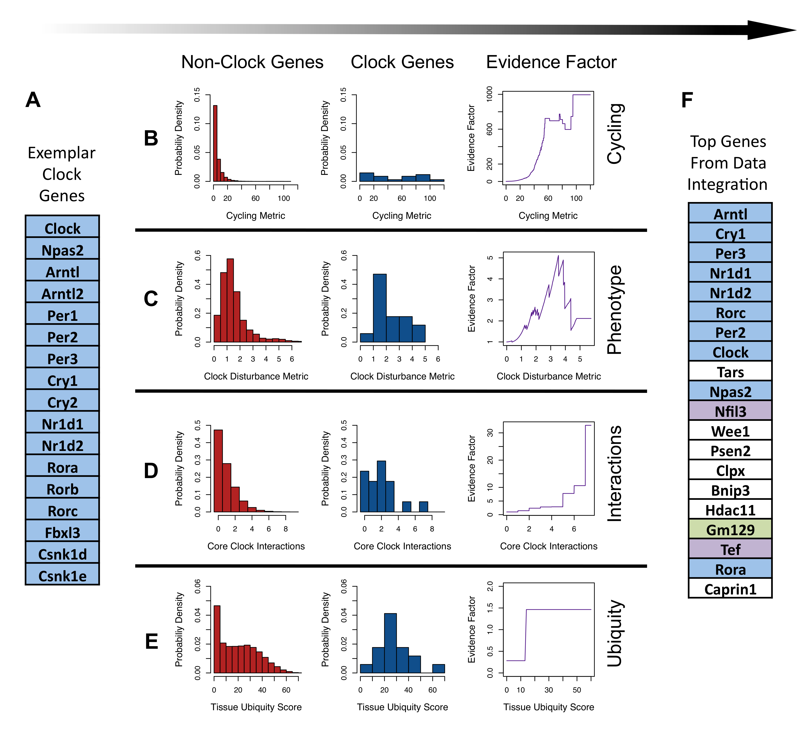
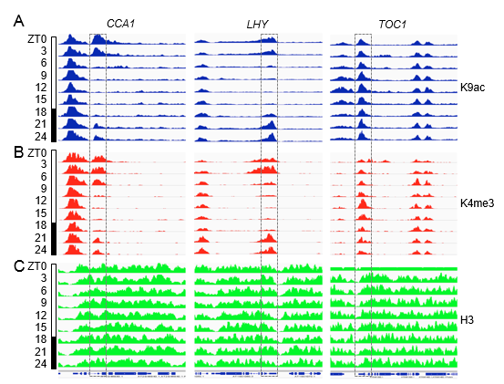
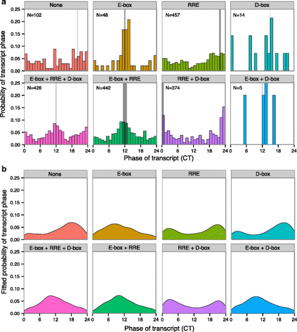

Horray! The past few years have been an exciting period for circadian research. High-throughput genomic and proteomic techniques have matured, which allow scientists to examine circadian components on a genome-wide scale
In order to further accelerate clock gene discovery, we have adopted a probabilistic machine learning approach to integrate heterogeneous, genome-scale datasets to identify candidate clock genes that functionally resemble known clock components. The single general cycling metric (MCyc) is a scoring system to classify genes based on their circadian patterns.
 Distributions of these metrics among nonclock genes (left panel) and exemplar clock genes (center panel) were used to construct evidence factors (right panel).

Circadian oscillation of histone modifications on clock genes
Enzymes involved in chromatin remodeling exert their coordinated activity to govern nuclear events in a timely fashion. A number of cases of combined histone modifications, which could represent examples of an 'indexing code', appear to correspond to distinct activating or silencing states of chromatin.
The control exerted by the circadian machinery on a substantial portion of the epigenome constitutes an exquisite paradigm of wide regulation by cyclic, time-controlled activities of chromatin remodeling.
A attractive hypothesis suggests that the phasing of transcription of clock-controlled genes to specific times of day emerges through the interaction of a specific clock-controlled transcription factor with its cognate DNA target.
Genes transcribed at a specific times of day share a promoter motif that binds a specific transcription factor whose activity peaks at that time of day, and genes transcribed at other times of day possess different promoter motifs that interact with distinct clock-regulated transcription factors.
We qualitatively compared the presence or absence of these regulatory motifs with the rhythmicity score of all the identified genes. This comparison allows us to identify novel genetic motifs that are responsible for conferring rhythmicity to corresponding genes.

Distribution of phase of genes that are significantly circadian classified according to the combinations of binding motifs